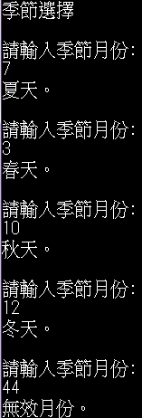
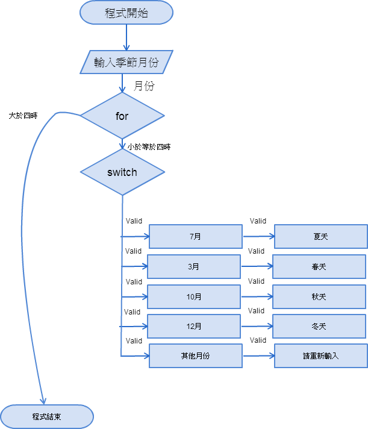
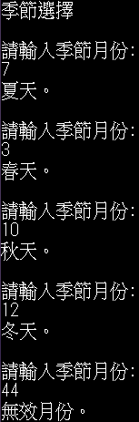

迴圈
|
上圖為右邊程式的應用， 熟悉while迴圈的使用。 |
void main() { while(i>=0)//若i大於零進入迴圈，當i小於零時跳出迴圈 { printf("季節選擇\n"); int season;//宣告season的變數 printf("請輸入季節月份\n"); scanf("%d",&season);//輸入季節月份 switch(season)//引入變數 { case 7://season為7，印出夏天 printf("夏天\n"); break; case 3://season為3，印出春天 printf("春天\n"); break; case 10://season為10，印出秋天 printf("秋天\n"); break; case 12://season為12，印出冬天 printf("冬天\n"); break; default://season為其他數字，印出請重新輸入 printf("請輸入正確季節月份\n"); } } i--;//控制迴圈的變數，每選擇一個季節，i就減一 } |
輸出結果:  |
|
 上圖為右邊程式的應用， 熟悉for迴圈的使用。 |
void main() { for(i=0;i<=4;i++)//一開始i等於零進入迴圈，每執行一次，i加一，直到大於四時 ，跳出迴圈。 { printf("季節選擇\n"); int season;//宣告season的變數 printf("請輸入季節月份\n"); scanf("%d",&season);//輸入季節月份 switch(season)//引入變數 { case 7://season為7，印出夏天 printf("夏天\n"); break; case 3://season為3，印出春天 printf("春天\n"); break; case 10://season為10，印出秋天 printf("秋天\n"); break; case 12://season為12，印出冬天 printf("冬天\n"); break; default://season為其他數字，印出請重新輸入 printf("請輸入正確季節月份\n"); } } |
輸出結果:  |